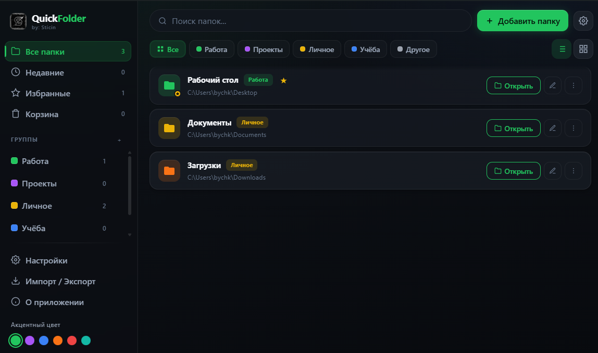

1
Закрепить важное
Добавьте папки проектов, клиента, учёбы или загрузок — и открывайте их без поиска по диску.
Windows · Offline · Без аккаунта
QuickFolder — лёгкое приложение, которое держит избранные каталоги под рукой: рабочий стол, проекты, документы, учёба. Без хаоса в проводнике и без лишних вкладок.

Не ещё один «файловый менеджер на 100 кнопок», а быстрый доступ к тому, чем вы реально пользуетесь.
Добавьте папки проектов, клиента, учёбы или загрузок — и открывайте их без поиска по диску.
Группы, избранное, недавние и корзина. Всё разложено, как в удобном лаунчере, а не в куче ярлыков на рабочем столе.
Без облака, без регистрации, без трекинга. Список папок хранится у вас — вы сами выбираете папку для данных.
Сравниваем не «с Adobe», а с тем, как люди обычно открывают папки каждый день.
| Проводник Windows | Ярлыки на рабочем столе | QuickFolder | |
|---|---|---|---|
| Скорость доступа | Часто «Клиент → диск → папка → ещё папка» | Быстро, но рабочий стол превращается в свалку | Один клик «Открыть» |
| Группировка | Ограничена | Почти нет | Свои группы, цвета, фильтры |
| Поиск по избранному | По всему диску | Глазами | Мгновенный поиск по вашему списку |
| Порядок | Зависит от дисциплины | Быстро захламляется | Избранное / недавние / корзина |
| Внешний вид | Стандартный | — | Тёмный UI, акцентный цвет, RU/EN |
Реальные сценарии — не абстрактные «productivity tips».
Проекты на разных дисках, репозитории, дизайн-ресурсы. Открыл QuickFolder — сразу в нужную папку клиента.
Лекции, курсовые, материалы по предметам. Не нужно каждый раз вспоминать, где лежит семестр.
Шаблоны, отчёты, общие сетевые папки. Меньше кликов — меньше раздражения в конце дня.
Фото, видео, загрузки, архивы. Всё важное — в одном окне, а не размазано по «Документам».
Да. Но чаще это либо тяжёлые файловые менеджеры, либо простые списки ярлыков.
Если вам не нужен «второй Total Commander», а нужен чистый список важных папок с группами, поиском и тёмным интерфейсом — QuickFolder попадает ровно в эту нишу.
Скачайте релиз, укажите папку для данных и добавьте первые каталоги. Через минуту — уже быстрее, чем лазить по проводнику.